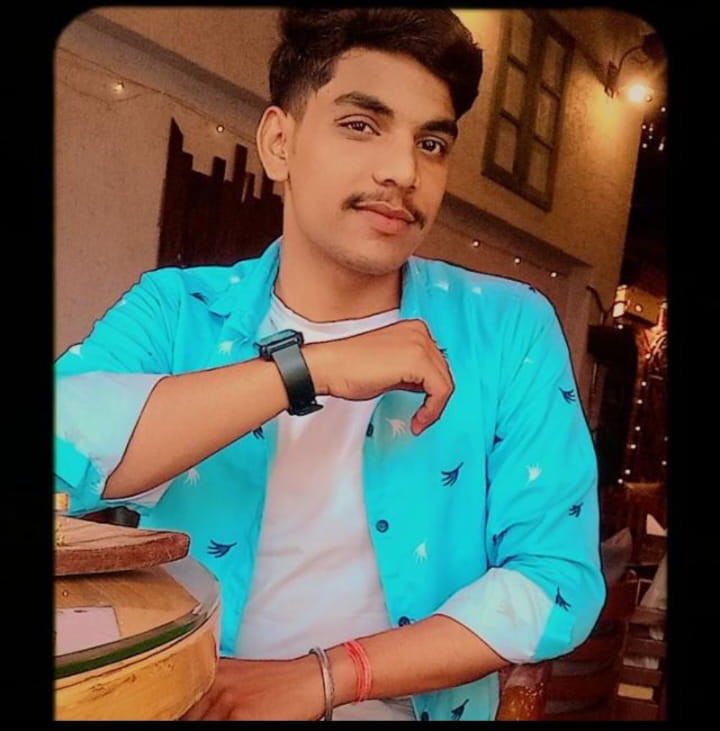

An 'About Me' page should convey who you are, what your values and principles are,
how you got to where you are, and why your product or service is important to you.
An ‘About Me' landing page is a crucial part of any website. Your ‘About Me' page is
how potential customers and employers are going to learn more about you and your business,
but it's also going to help you form strong connections with your readers. When your customers feel like they actually know you, you'll become a much more credible brand in their eyes.

Abhishekh Singh Tomar
Hi, I'm Abhishekh Singh Tomar and I'm 21 yrs old , i was borin in gwalior and I'm currently pursuing my BTech, where I'm diving deep into the world of technology and engineering. Passionate about learning, I aim to expand my skills and knowledge in the field to make a significant impact.
When I'm not studying, I enjoy exploring new interests and taking on different challenges. I'm always eager to grow, whether it's through academics, personal development, or new experiences.
If you're looking for someone who is hardworking, dedicated, and always curious, I'm your person.